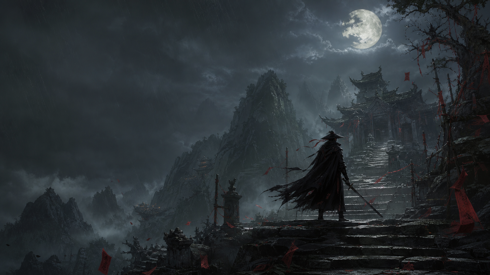

Beginner's Guide
A spoiler-light route for settings, difficulty choice, combat habits, resource use, early weapons, and the fastest way to stop panic-dodging.
Open Beginner Guide
English guide hub for S-GAME's kungfupunk action RPG
Track the current listed release date, learn the combat language before launch, and jump into boss, weapon, quest, build, and walkthrough guides as soon as the full game lands.
High-value guide URLs
Players will search for release timing first, then platform support, combat basics, weapons, bosses, and spoiler-safe walkthrough help. These pages create a clean content foundation for Google Search Console while leaving room for verified launch data.
A spoiler-light route for settings, difficulty choice, combat habits, resource use, early weapons, and the fastest way to stop panic-dodging.
Open Beginner GuideCurrent launch date, countdown, wishlist notes, timezone caveats, and update policy.
Where the game is expected, what to verify, controller notes, and edition tracking.
Parry, block, dodge, posture reads, punish windows, and rhythm-first fundamentals.
Primary blades, secondary tools, upgrade paths, and matchup notes.
Telegraphs, punish windows, healing rules, checkpoints, and spoiler-safe tips.
Region routes, locked paths, side quests, missables, and ending triggers.
Defensive builds, aggression builds, boss-focused setups, and New Game Plus routing.
Editorial policy, sourcing standards, launch verification, and contact-style notes.
Combat primer
The site should onboard players around decisions, not button lists. Current public material points to fast third-person action, blocking, parrying, dodging, resource pressure, primary weapons, secondary Phantom Edges, and attacks that demand different defensive answers.
Confirmed vs pending
A credible wiki for an unreleased game should be transparent. This tracker helps readers understand which pages are based on public information and which need launch-day verification.
| Topic | Status | Page Treatment |
|---|---|---|
| Release date | Currently listed | Show date, countdown, source notes, and update history. |
| Combat terminology | Partial | Explain public terms only; revise after hands-on capture. |
| Boss roster | Pending | Use placeholders until full-game verification. |
| Endings and quest outcomes | Pending | Gate behind spoiler warnings and route tables. |
Search questions
The current listed release date used by this wiki is September 9, 2026. Release timing can change before launch, so the release page should be checked before GSC submission and again when official storefronts update.
The safest editorial answer is that it shares some strategic-action audience overlap, while official messaging frames it around kungfupunk action, fast martial-arts flow, and handcrafted encounters rather than a pure Soulslike label.
Release hub, platform hub, beginner guide, combat glossary, trailer breakdowns, confirmed weapons, boss preview pages, About page, sitemap, robots file, and a strict rumor policy.
Built from public pre-release information, especially S-GAME's official materials and the PlayStation Blog overview of the world, Soul, kungfupunk direction, semi-open maps, and handcrafted martial-arts action. Storefront details should be rechecked before publication.
PlayStation Blog source Official site Sitemap